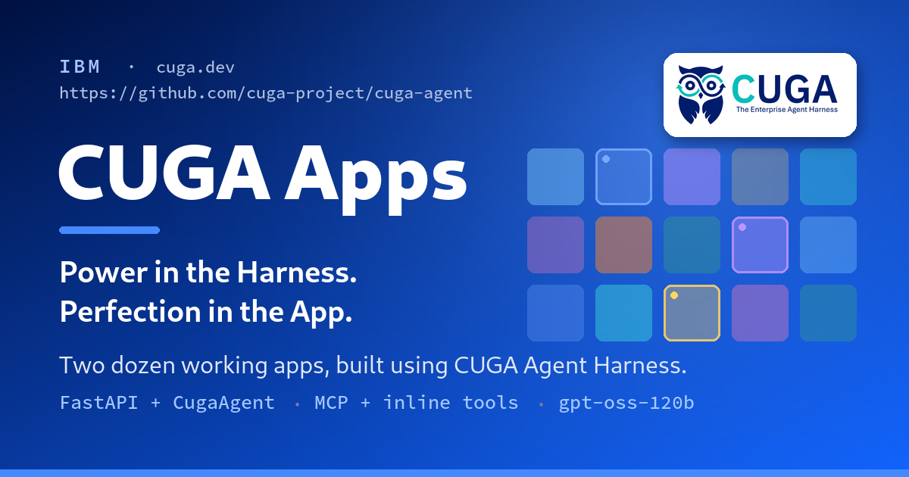

04 · Hugging Face Blog
CUGA, 에이전트 배선 작업 줄인다

이 글은 새 모델 발표가 아니라, 에이전트 앱을 실제로 만드는 데 드는 ‘배선 비용’을 줄이는 도구 소개에 가깝다. 그래서 화려한 아키텍처보다 어떤 부분을 안 써도 되는지, 어디까지가 하네스의 책임인지, 운영 시 어떤 규약이 중요한지를 앞세운다. 블로그가 내세우는 설득 포인트도 추상적 비전보다 단일 파일 앱 두어 줄, 도구 반환 규약, 배포 전환성처럼 매우 실무적이다. 도입 검토용 읽을거리로는 오히려 이 점이 장점이다.
원문이 말하는 핵심
CUGA는 IBM의 오픈소스 에이전트 하네스로, 계획, 실행 루프, 도구 호출, 상태 연결을 미리 처리해준다고 소개된다. 개발자는 주로 도구 목록과 지시문(special_instructions)만 정의하면 되고, 실제 사용 코드는 CugaAgent를 생성해 invoke하는 수준으로 단순화된다. 이를 증명하기 위해 단일 FastAPI 파일로 만든 24개 앱 예제를 함께 공개했다. 글의 톤도 ‘배우라’보다 ‘읽고 복사하라’에 가깝다.
왜 프레임워크가 아니라 하네스인가
원문은 대부분의 에이전트 앱이 유용한 기능보다 먼저 모델 클라이언트 연결, 도구 어댑터 작성, UI 상태 스트리밍, 다중 에이전트 구성 같은 배선 작업에 시간을 쓴다고 본다. CUGA는 이 오케스트레이션을 공통 계층으로 묶어 반복 구현을 줄이려 한다. 장기 작업에서 중간 결과를 잃고 다시 유도하는 문제를 막기 위해 상태를 유지하고, 잘못된 호출을 되짚는 반성 단계를 둔다고 설명한다. 즉 모델이 실수했을 때 프레임워크 바깥에서 사람이 메워야 하는 부분을 하네스가 일부 떠안는 구조다.
기존 도구와 다른 지점
글은 CUGA의 개별 요소가 완전히 새롭다고 주장하지는 않는다. 대신 OpenAPI, MCP, 랭체인 함수(LangChain functions)를 같은 방식으로 묶고, 장기 계획과 변수 관리, 자기 수정(self-correction), 선언적 가드레일(guardrails), A2A 기반 멀티 에이전트 위임, Docling 기반 RAG, 공급자 전환을 하나의 얇은 API 아래 모았다는 점을 차별점으로 든다. 비용·지연시간 절충은 Fast, Balanced, Accurate 추론 모드로 설정에서 조절하고, 코드 실행은 로컬·Docker/Podman·E2B 클라우드 중 선택할 수 있다. 같은 에이전트 정의를 두고 실행 환경만 바꾸는 식이다.
예제로 본 앱 구조
대표 예시로는 IBM 클라우드 아키텍처 어드바이저 앱이 나온다. 모델은 환경 변수로 공급자와 모델명을 바꾸는 create_llm 팩토리에서 받고, 나머지는 tools, special_instructions, cuga_folder 정도만 넘긴다. 도구는 앱 특화 로컬 함수와 MCP 기반 공통 도구를 섞는다. 예를 들어 search_ibm_catalog는 실제 IBM Cloud 서비스 존재 여부를 먼저 확인하도록 설계돼, 서비스 이름 환각(hallucination)을 프롬프트와 도구 수준에서 동시에 누른다.
운영 난이도를 가르는 규약
실무적으로 가장 흥미로운 대목은 모든 인라인 도구가 같은 작은 반환 봉투(envelope)를 사용한다는 부분이다. 성공은 {"ok": true, "data": {...}}, 실패는 {"ok": false, "code": "...", "error": "..."} 형태다. 글은 이 규약이 단순한 보일러플레이트가 아니라, 에이전트가 선언된 실패를 처리하며 다음 계획으로 넘어가게 만드는 핵심이라고 설명한다. 반대로 예외가 그대로 터지면 장기 계획 전체가 무너질 수 있다는 것이다.
실무에서는 어디에 쓰일까
사내 파일럿에서는 고객 응대, 사내 검색, 아키텍처 추천처럼 도구 조합이 핵심인 업무에 적합해 보인다. 특히 MCP 서버나 내부 API를 이미 보유한 조직이라면, 에이전트 자체보다 도구 표준화와 실패 응답 규약 정리에 먼저 활용할 수 있다. 단일 파일 예제가 많다는 점은 러닝커브를 낮추는 장점이다. 반면 실제 프로덕션 전환에서는 상태 저장, 권한 모델, 감사 로그, 샌드박스 정책을 별도로 얼마나 잘 얹을 수 있는지가 더 중요해질 수 있다.
도입 전 확인할 리스크와 한계
글은 벤치마크 상위 성과와 예제 수를 강조하지만, 대규모 운영에서의 관측성(observability), 권한 분리, 장애 복구, 장기 세션 비용 같은 요소는 자세히 다루지 않는다. 또한 hosted apps가 gpt-oss-120b 같은 오픈 웨이트 모델에서도 버틴다는 주장을 하면서도, 각 모드별 실제 품질 차이는 본문 발췌만으로는 충분히 확인하기 어렵다. 결국 CUGA는 ‘하네스가 해주는 범위’가 명확할수록 강한 도구로 보인다. 반대로 업무별 예외 처리와 권한 정책이 복잡한 조직은, 편의성만 보고 바로 표준으로 삼기보다 작은 업무 단위로 검증하는 편이 안전하다.
주요 용어
원문 정보
제목: Build real agentic apps using CUGA: two dozen working examples on a lightweight harness
출처 URL: https://huggingface.co/blog/ibm-research/cuga-apps